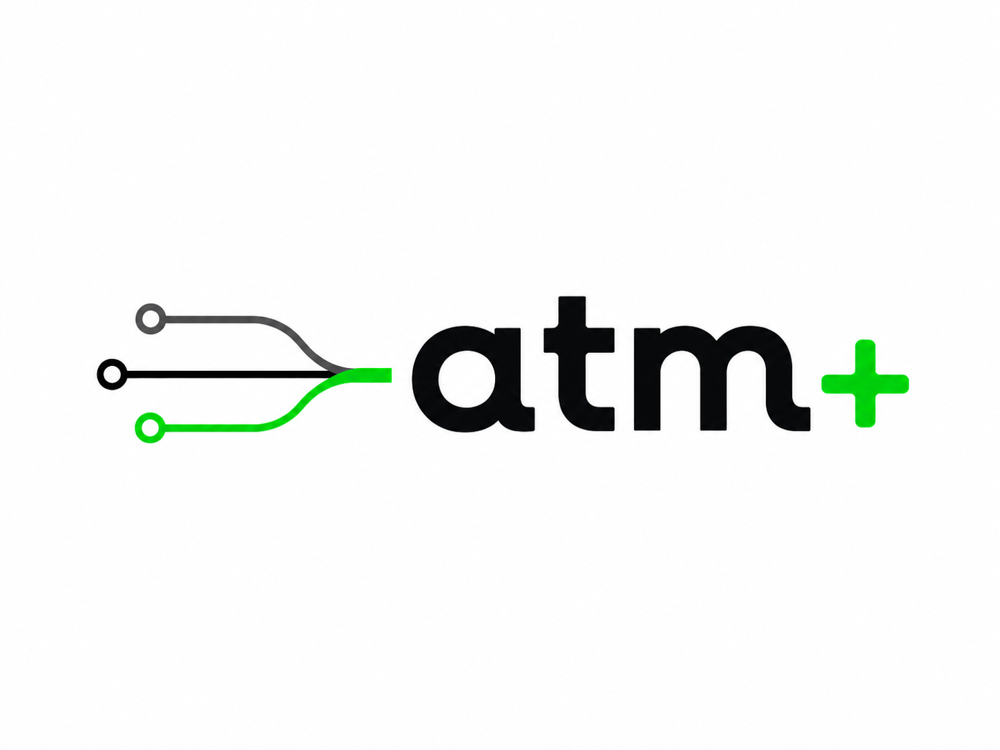
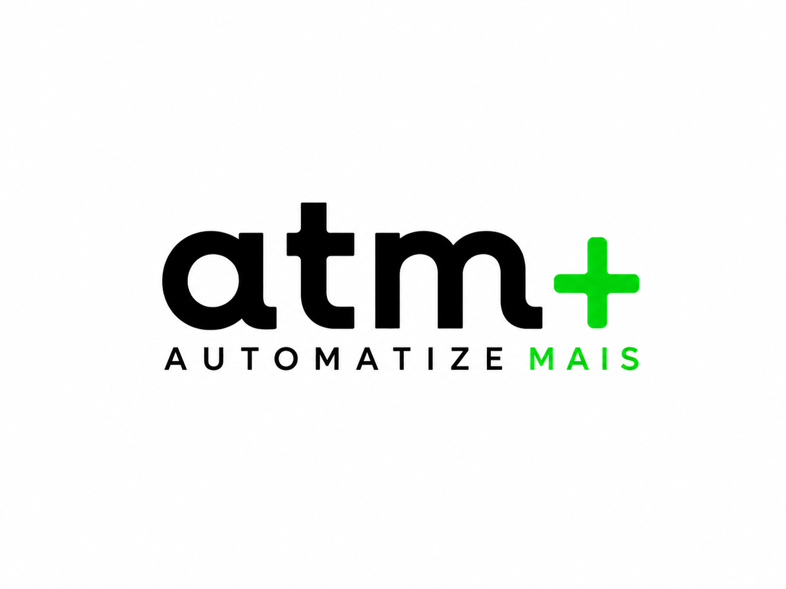
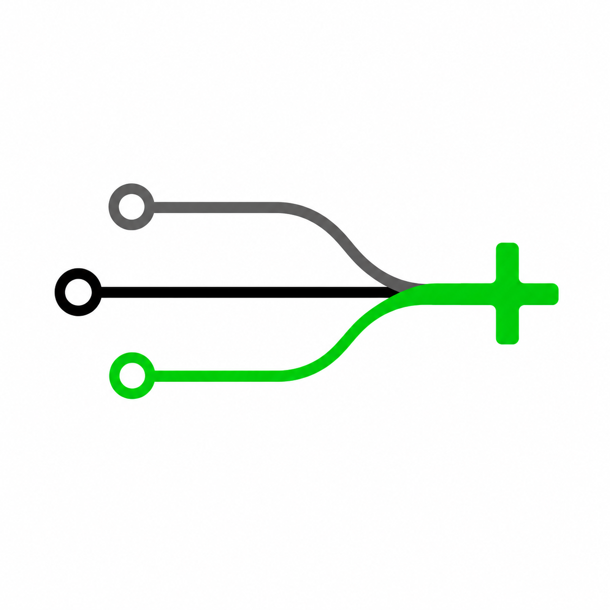
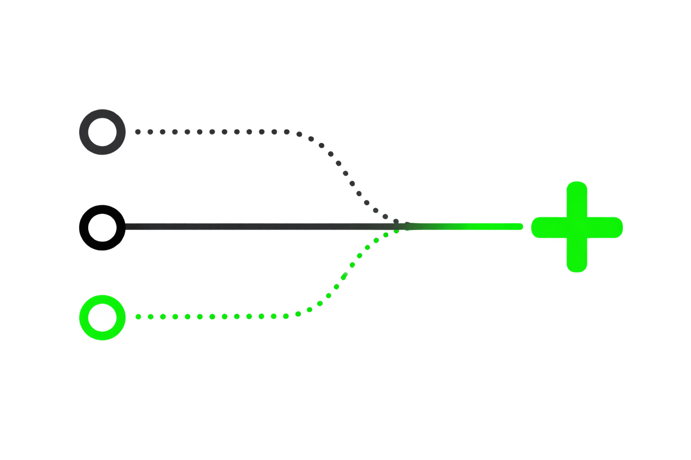
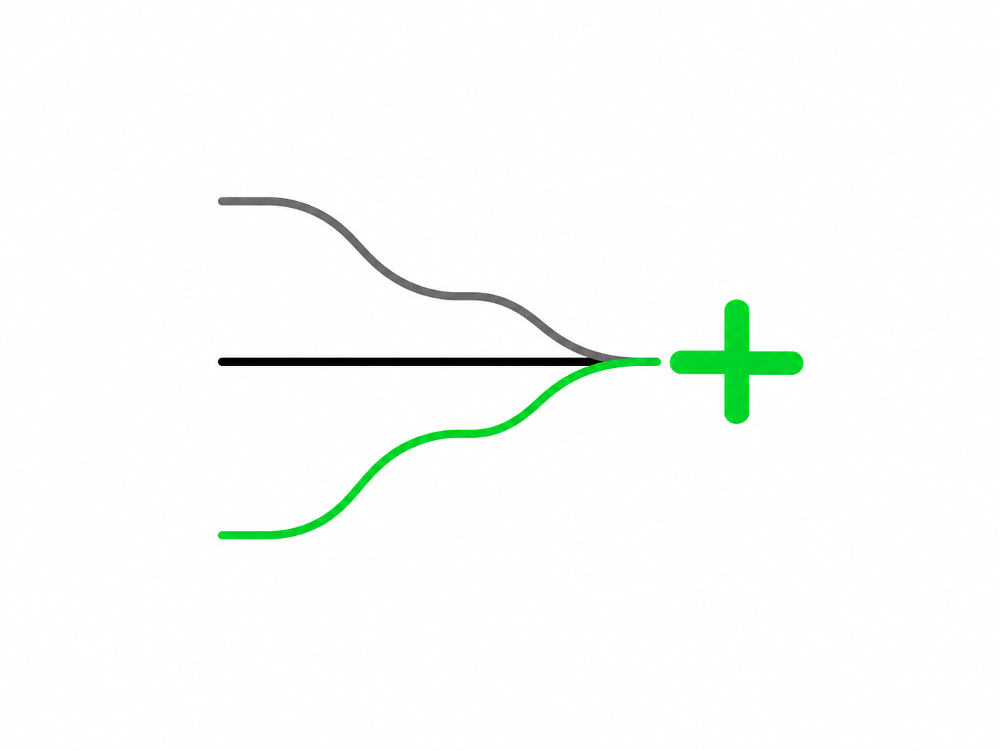
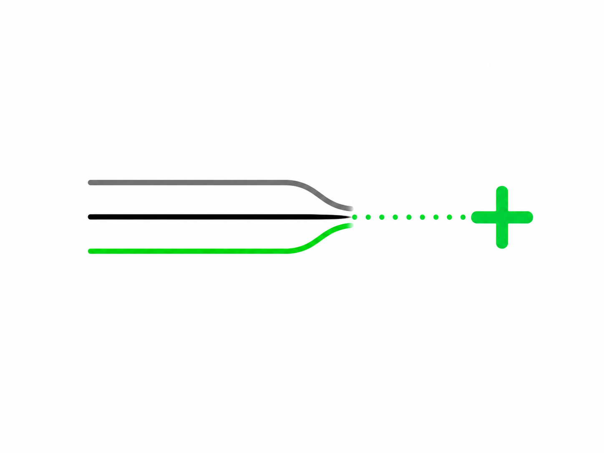
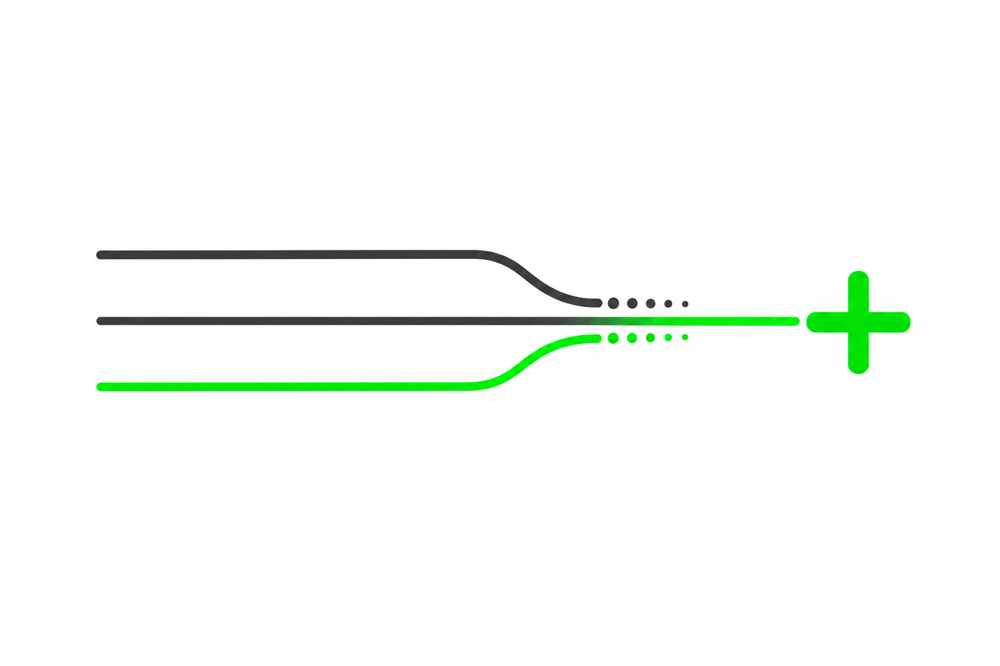
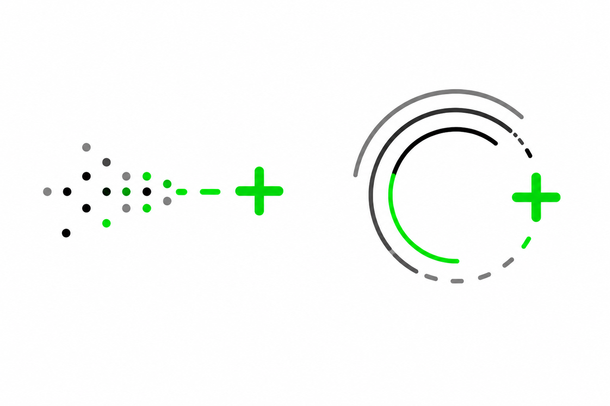

Reserve ao redor da marca, no mínimo, a largura do sinal “+”. Nenhum texto ou elemento deve invadir essa área.
Guia de identidade visual
Tecnologia que conecta e transforma.
A identidade ATM+ traduz automação, inteligência e movimento em um sistema visual direto, preciso e humano. Este documento reúne os fundamentos para manter a marca consistente.
+
01 — MarcaConexão,
Conexão,
movimento e ganho.
As linhas representam fluxos e integrações. Os nós sugerem pontos de contato. O “+” materializa o resultado e dá sentido ao nome: ATM+ também é “Automatize Mais”.
atm+
atm+
Use a versão clara sobre fundos escuros e a versão principal sobre fundos claros. O verde deve permanecer vibrante.
Não altere proporções, espaçamentos, inclinação das linhas, cores internas ou relação entre símbolo e nome.
02 — CoresEnergia em verde.
Energia em verde.
Clareza no contraste.
O verde elétrico sinaliza ação, conexão e resultado. Preto e verde profundo trazem solidez; os neutros deixam o sistema respirar.
#00E05A · RGB 0 224 90#0D0D0D · RGB 13 13 13#004D2B · RGB 0 77 43#F6F6F6 · RGB 246 246 246#FFFFFF · RGB 255 255 25503 — TipografiaUma voz visual
Uma voz visual
clara e precisa.
Sora é a família principal. Geométrica e contemporânea, funciona em grandes mensagens e em interfaces, sempre com boa legibilidade.
Aa
Regular 400 — Informação e textoSemibold 600 — Navegação e açãoExtraBold 800 — Marca e impacto
Automação para
vender mais.
Títulos usam entrelinha compacta e tracking negativo. Textos de apoio têm ritmo aberto, linguagem simples e comprimento de linha controlado.
04 — Sistema visualFluxos que
Fluxos que
convergem.
A linguagem gráfica nasce da ideia de múltiplos processos conectados a um núcleo inteligente — e convertidos em ganho operacional.
Linhas e nós
Conectores finos mostram origem, percurso e destino. Use com moderação e propósito.
Geometria amigável
Cantos arredondados equilibram a precisão técnica com proximidade e acessibilidade.
ATENDIMENTO COM IAAUTOMAÇÃODADOS
05 — Acervo visualElementos prontos
Elementos prontos
para aplicação.
Este acervo registra as composições fornecidas para a marca. Use os arquivos como referência de proporção, ritmo, direção e comportamento dos fluxos.









06 — Voz da marcaDireta, inteligente
Direta, inteligente
e orientada a resultado.
A ATM+ explica tecnologia sem complicar. A conversa começa no problema real da operação e termina no impacto que a solução gera.
Clara
Frases curtas, benefícios concretos e pouco jargão. Se um termo técnico não ajuda a decisão, ele não entra.
Pragmática
Falamos de gargalos, tempo, conversão e escala. Tecnologia aparece como meio, nunca como espetáculo.
Confiante
Tom seguro e próximo, sem exageros. Preferimos demonstrar impacto com evidências e exemplos reais.
Promessas absolutas, futurismo genérico, excesso de termos em inglês e mensagens que colocam a tecnologia acima do negócio.
“Identificamos o gargalo, conectamos os processos e construímos uma solução que evolui com a operação.”